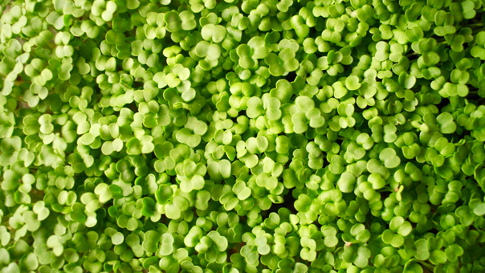

РУККОЛА
Уже через пару месяцев регулярного употребления вы ощутите больше бодрости, получите высокую работоспособность и выносливость. Растение обладает уникальными свойствами: антиоксидантная защита для активного долголетия профилактика онкологических заболеваний поддержка здоровья ЖКТ сохранение здоровья глаз помощь в похудении и контроле веса и многое другое.
Поддержка здоровья и крепости костей Микрогрин рукколы богата кальцием точно так же, как и шпинат. При этом она содержит меньше оксалатов — соединений, подавляющих способность организма в усвоении данного минерала. Поэтому, добавив ее в рацион, вы получите больше кальция. Витамин K также требуется для костной ткани. По рекомендациям ВОЗ необходимо получать его из зелени, темных листовых овощей. Это послужит профилактикой остеопороза, защитит от ломкости и воспалительных заболеваний. Понижает кислотность в желудке, защищает от язвы Это возможно благодаря большому количеству антиоксидантов, а также естественному свойству мирокгрина рукколы подавлять выработку желудочного сока. Также, зелень обладает так называемыми цитопротекторными свойствами — укрепляет слизистую оболочку желудка и таким образом предотвращает образование язв. Профилактика раковых заболеваний Как и другие представители семейства крестоцветных, микрогрин рукколы содержит арсенал веществ для борьбы с опухолевыми явлениями: Индолы, которые особенно полезны для женской гормональной системы, нормальной выработки эстрогена. Антиоксиданты (такие как витамин C, каротиноиды, флавоноиды) подавляют действие свободных радикалов. Глюкозинолаты – уникальные для крестоцветных соединения, которые нейтрализуют канцерогены, убирают их отравляющее действие, стимулируют защитные свойства организма. Также подавляют нездоровое деление клеток, особенно при раке груди. В лабораторных условиях сила действия сравнима с химиотерапией. Исследования показали, что глюкозинолаты лучше потреблять сырыми, нежели в форме БАДов.
Поддержание здоровья глаз Лютеин и зеаксантин — каротиноиды, необходимые для защиты глаз от различных заболеваний: катаракты, глаукомы, деградации хрусталика. Также лютеин защищает глаза от воспалений, убирает плохое влияние ультрафиолета и “синего” спектра экранов гаджетов. Ученые всего мира, в том числе и ВОЗ настоятельно рекомендуют добавить эти “глазные витамины” в ежедневную диету, чтобы поддержать их высокую концентрацию в организме. Помощь в контроле веса Низкокалорийная, низкоуглеводная и с низким гликемическим индексом — микрогрин рукколы обладает всеми этими свойствами. Высокое содержание клетчатки — 1,6 грамм на 100 грамм — составляет 6,4% рекомендуемой суточной дозы. Это улучшает пищеварение, регулирует перистальтику, нормализует усвоение питательных веществ. Укрепляет здоровье при серьезных заболеваниях Диабет 2 типа. В исследованиях показано, что это растение повышает усвоение глюкозы и чувствительность к инсулину. Атопический дерматит связан с дисфункцией кожного барьера. Прием в пищу этого вида зелени активность воспалительных цитокинов, улучшает липидный барьер. Проблемы с сердцем. Противовоспалительные свойства защищают от сердечных заболеваний, нормализуют уровень холестерина, являются профилактикой образования тромбов. Что еще может микрогрин рукколы? Вот краткий обзор других преимуществ для здоровья: Витамин C, медь и железа являются профилактикой анемии. Фитохимические компоненты защищают печень, помогают вырабатывать глутатион — антиоксидант для очистки организма. Фолиевая кислота, витамин B помогают в защите от заболеваний сердца, восстанавливают клетки, снижают риск кишечных полипов. Потребление более 400 мкг фолиевой кислоты рекомендуется для профилактики рака груди, легких, горла. Калий, магний, натрий, фосфор и кальций защищают от метаболических нарушений и разрушения органов.